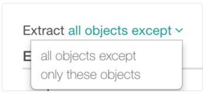
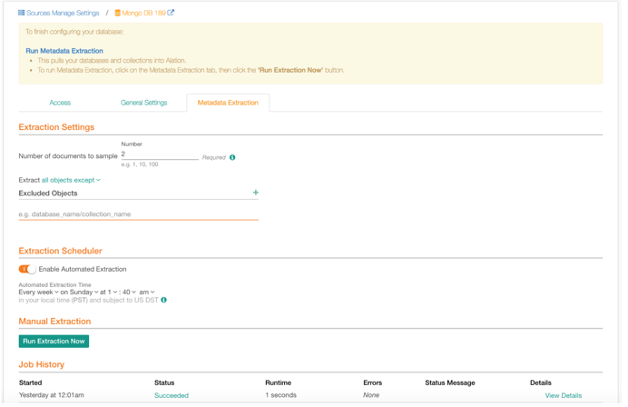

MongoDB¶
Available from Alation V R4 (5.8.0+)
MongoDB is an open source database management system (DBMS) that uses a document-oriented database model to support various forms of data.
Note
Ensure that the feature flag enable_generic_nosql_support is
set to True. If the feature flag is not turned on, MongoDB will not be displayed in the
drop-down list of Database Types. This will not allow you to add the data
source.
You can set the feature flag alation.feature_flags.enable_generic_nosql_support
using alation_conf. To set the feature flag, you need sudo access to the
Alation host.
On the host, enter the Alation shell and enable the flag:
sudo /etc/init.d/alation shell alation_conf alation.feature_flags.enable_generic_nosql_support -s True
Restart Supervisor:
alation_supervisor restart web:uwsgi celery:*
MongoDB as Custom DB¶
Starting from V R7 (5.12.x), MongoDB version 4.2 is supported as Custom DB source type with the CData driver.
MongoDB Using Built-in Connector¶
This section describes how to configure a MongoDB data source using the built-in MongoDB connector.
Required Information¶
To configure MongoDB in Alation, you will need the following information:
Hostname
For the Kerberized environment, the hostname must be a fully qualified domain name.
Port number
Auth Source: This is required only for non-Kerberized environments
Service account with the following privileges:
Root/Admin Access to the MongoDB cluster
Alation provides three types of Authentication for MongoDB:
Basic Authentication
Kerberos Authentication
Starting with V R7 (5.12.x), non-authenticated connection
{kind=link}
Connection¶
Confirm that Alation can reach the default port (or the configured port) for the MongoDB service. The default port is 27017.
URI¶
URI-based connection is supported where connection properties are passed as parameters. For more information on connection string format, see this MongoDB article.
Select the checkbox Enter URI to add URI details.
Examples:
mongodb://mongodb0.example.com:27017/admin
mongodb://server.example.com/?ssl=true&authSource=aDifferentAuthDB
Service Account¶
Create the service account for MongoDB based on basic or Kerberos authentication:
Basic Authentication¶
See the following example for creating a MongoDB user:
db.createUser( { user: "mongouser", roles: [ { role: "root", db: "admin" } ] } )
Note
As shown in the code snippet, if the DBA has the role of root,
access to all databases is automatically provided. If the role is other
than the root, make sure that you have the listDatabases privilege.
Refer to the corresponding MongoDB documentation.
Kerberos Authentication¶
See the following example for creating a MongoDB user:
db.createUser( { user: "mongouser/instance@REALM.COM", roles: [ { role: "root", db: "$external" } ] } )
To perform metadata extraction, service account must have root access.
If the DBA does not have root access, a role with listDatabases privilege must be provided.
Non-Authenticated Connection¶
Starting with V R7 (5.12.x), to establish a non-authenticated connection, as the service account Username in Alation, type one or several spaces. If Username is spaces and does not include any other characters, the non-authenticated connection will be established.
Using Kerberos for MongoDB V R4 (5.9.x)¶
Keytab is not supported. To configure Kerberos authentication for MongoDB,
Follow the instructions for Configuring Kerberos for Data Source Authentication.
Inside the Alation shell, create the kerberos.conf file in the following location: /data1/site_data/kerberos.conf
cd /data1/site_data/ sudo vi kerberos.conf
The file should have the following:
primaryLoginContext { com.sun.security.auth.module.Krb5LoginModule required; };
Append security information to the
taskserver.extra_flagsvalue inalation_conf.Check the contents of the field:
alation_conf taskserver.extra_flags. If this field has any value, you will want to avoid overwriting. Copy the existing values to a separate file and append the additional content before setting.Otherwise, set the
taskserver.extra_flagsas follows:alation_conf taskserver.extra_flags -s " -Djava.security.auth.login.config=/data1/site_data/kerberos.conf -Djavax.security.auth.useSubjectCredsOnly=false"
Restart Taskserver:
alation_supervisor restart java:*
Using Kerberos for MongoDB from V R5 (5.10.x)¶
For V R5 (5.9.x), follow the instructions as listed in for Configuring Kerberos for Data Source Authentication.
Auth Source¶
Auth Source is the name of a MongoDB database where the user credentials
are stored. The user credentials of the existing signed-in user are
taken into account. MongoDB credentials can be stored in any database.
admin is the default name of the Auth Source. However, you can choose
to create the name of the Auth source other than admin. These
credentials must be provided during the time of sign-in.
SSL¶
Select the checkbox Server uses SSL to include SSL information. To install a CA certificate on Alation, follow the steps in the section Installing Certificates for Secure Data Source Connections.
Metadata Extraction¶
Metadata extraction requires access to:
listDatabases: Root access should be provided. If root access is not provided,listDatabasesaccess must be provided. For more information onlistDatabases, refer to this article.Read access must be provided to each database that needs to be extracted.
The extraction condition including Exclusion and Inclusion filters along with the extraction schedule and results of prior runs can be seen on the Metadata Extraction tab.
{kind=link}
Extract all objects except condition serves as the condition for exclusion filter and extract only these objects (inclusion filter). Select the appropriate option from the drop-down list and click Run Extraction Now button to perform metadata extraction.
{kind=link}
Note
The administrator can control the number of documents being pulled in from the source for sampling.